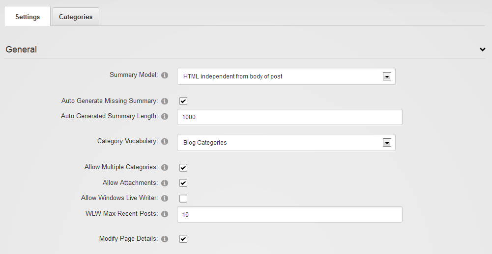
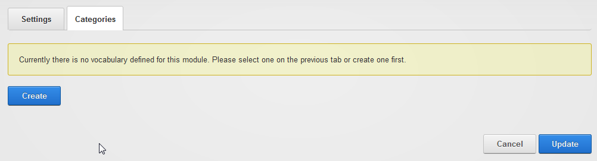
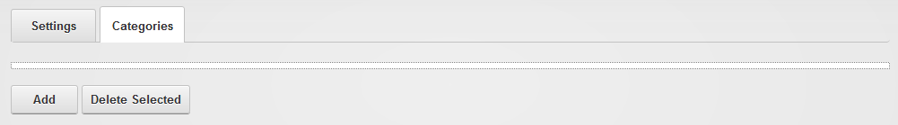
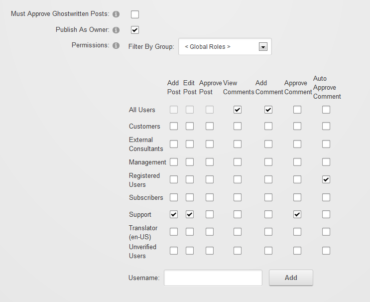
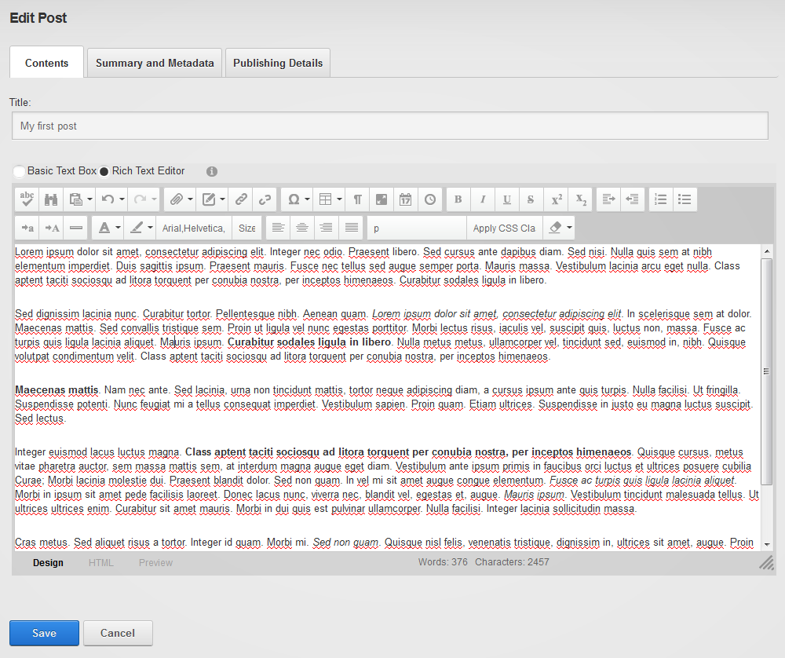
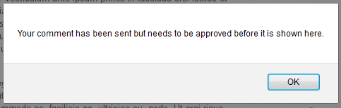
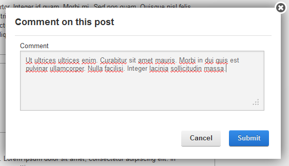
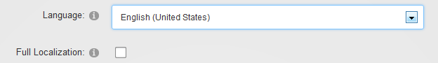

Version 6.0, Peter Donker, August 2013
First, let’s identify what you’ve downloaded. Normally you’ll have downloaded a zip file with a name along these lines: Blog_06.00.00_Install.zip. The name explains what it is you have. “Blog” is the name of the module, “06.00.00” is the version and “Install” is the package type.
The module can be found in two “flavors”: Install and Source. These are two different zip files. The Install zip file (or “package”) includes just those files necessary to make the module work, while the Source package includes the source code files that will enable you to change the behavior of the module to your liking and recompile it. Normally you’d install the “install package”, i.e. in this case Blog_06.00.00_Install.zip.
This zip file needs to be uploaded to DNN. You do that by logging in as host user and going to Host > Extensions
Click “Install Extension Wizard” which will bring up a pop up screen that will start the installation process. Choose the downloaded zip file and click “Next”. Keep clicking “Next” to walk through each stage of the installation process until you see the final installation report.

If you see anything in red or bold on this report, or anything else suspicious: now’s the time to copy the contents of this report so it can be referred to at a later time to check if the installation was OK. Most importantly the report shows the result of the SQL scripts that were run and the writing of the files to your DNN installation. Installation errors commonly are a result of SQL scripts failing or files not being written to the server’s hard disk.
Click “Return” once you’re satisfied the installation was OK. You’ve now installed the module.
You can skip this part if this was the first time you’ve installed the module. If you’ve been using the DNN Blog module before, then you need to pay attention. DNN takes care of upgrading modules. There’s a built in mechanism to do this which is based on the version number of the module. The module makers make sure the package contains all necessary details to upgrade older versions of the same module. The procedure for upgrading is no different than for a regular first install of the module. I.e. you log in as host and upload the zip file as described above. However, I urge you to do one thing: backup your installation. Why? Is it because we’ve taken a cavalier approach to your upgrade? No. It’s just that DNN is unable to recover from a bad upgrade. And this inevitably means you’ll lose your data. So a prudent DNN administrator will back up his/her installation before upgrading a module.
Secondly: pay extra close attention to the installation report mentioned above. This is not trivial. But again: DNN can’t recover from an error and sometimes errors begin to appear later on. Make sure that (1) the SQL scripts that were run are all labeled with a higher version nr than the previous version you had installed, (2) that they didn’t produce any errors, (3) that dlls were actually written to the bin folder and (4) that other files were written to the module folder. Then do a “sanity check” on the module. Is it still working? Try various functions to be sure. Only then give the green light that all’s well.
For version 6 the module has been completely rewritten. And in doing so there have been a number of paradigm shifts in how the module works. The first thing you’ll notice is that the module looks very differently. What you need to realize at this point is that the module is no longer a group of modules with each a specific function (i.e. blog list, blog view, category list, etc). Rather it is one single module that is set to display a “template”. Templates are included for most of the previous submodules. I.e. the default template shows the blog posts, there’s a template for a category list, one for a calendar, etc.
A second major shift in paradigm is that the module manages its content per module, and no longer per portal. In the old days, if you'd add a second blog module to another page it’d display the same data. This is no longer the case. The module encases its own data. This can still be multiple blogs per module, but the data is locked to the module. So how can you make another module show data from the first module? That’s done in the module’s settings. Each module has the option to point to a data source Blog module anywhere on the site. The upgrade tries to do set this up as best as it can. But if you see Blog module parts that are empty on your migrated site, check out this setting. And find out the primary module where the data is now kept. Usually it should show up with the default template and the management buttons at the top.

If you’re itching to start blogging here’s the quick path to start:
Create or go to the page you want to use for your blog
Add the blog module to the page
Click the “Manage” button on the module that has now appeared
On the “Blogs” tab, click “Add Blog”
Add a title for your blog. Under “Permissions” select the checkbox “All Users/View Comments”, “All Users/Add Comment” and "Registered Users/Auto Approve Comment". Click “Update”. Click “Return” to return to the main page.
You should now see a big button “Blog!”. Click that and start blogging.

Version 5 and older of the DNN Blog module consisted of multiple so-called “module definitions”. This meant that when you put the module on a page, you didn’t see just one module appear. Instead you got a bunch of modules, each with a different role in the module. Although this mechanism has some merit, it was confusing at best. Plus: there is no good way in the DNN framework to manage the individual module “parts”. Finally the different module definitions were mostly different representations of the same data (i.e. a list of blogs, a list of categories, etc).
Instead, the module is now more straightforward in that it consists of just one module. This module can be set to render in any number of ways which will allow the amount of representations to keep growing. Out of the box the module comes with 11 templates that each show the module’s data in a different way. This includes the old ways data was shown, plus a number of new ways.
In the screenshot above you can see the main representation (i.e. the default template) shown on the left. On the right you’ll see several module instances showing other templates: a blog list, a category list and a calendar. The “secondary” modules don’t even need to be on the same page. You just need to “point” them to the main blog module so they know where the data comes from (you can have multiple blog modules on your site that each hold its own set of blogs). This “pointing” is done by specifying the parent blog module in the module settings of the secondary modules.
Another thing to note is that the main module shows the control panel. Whether it is shown is also set in the module settings. The idea is that you set it to show on your main blog module.
Finally you’ll see the default template includes a number of features in the way it renders a list of posts. Notably there is a small side panel with metadata (date of publication, nr of view/comments, tags and categories), a banner image (the image specified in the meta data of the post) and the summary of the post. If you find that something doesn’t render as above or as desired, note that most likely it is a result of the interplay of the module’s HTML and CSS with the skin that you are using. The templates make it as easy as possible for you to change these. The packaged templates are found under DesktopModules/Blog/Templates. You can copy and change templates under Portals/[id]/Blog/Templates. Both sets of templates will show up on the template selector.
By default, when you add the blog module to a page you’ll see a line of buttons at the top (this is in edit mode):

One of the goals of the rewrite of the module has been to offer more flexibility but yet to simplify operations. This is no easy task and I can't say for sure whether we’ve hit the mark. Time will tell. The buttons are there to provide entry points to the primary operations. Admins will see all buttons. Bloggers will see “Manage” and “Blog!” (once a blog has been created). Regular users will only see the grey icons to the right (RSS and Search).
Note that the module menu is still significant. So for some things you’ll need to switch to Edit mode.
 The gear icon will give you access to the “Module Settings” |
 The pencil icon leads to both the “Manage” screen (the same as through the “Manage” button on the main view) and “Template Settings”. More about templates later. |
The admin screen shows settings that apply to all managed content of this module. I.e. all blogs. This is why it’s only accessible to those with Edit permissions on the module. The Admin page is divided over two tabs: Settings and Categories. Because categories are also shared between all blogs, this is also managed on this page. Let’s examine the settings first.

We’ve tried to make more explicit how summaries are being used in blogging. It turns out this varies across platforms and they differ significantly. The basic difference is between having it as an introduction to the main text (in Windows Live Writer this is achieved using a “Split Post”) or as a completely independent entity. In the former, the complete post is a concatenation of the summary text and the body text. In the latter the complete post is just the body text. In this case the summary is really a summary of the body text.
A second distinction is between plain text or HTML. In some applications it is useful to force users to provide a summary in plain text. I.e. without the possibility to add markup, images, etc. This is useful when you need total control over the presentation of the text on aggregated views. I.e. when you’re displaying a list of post summaries, you may not want your bloggers to be able to inject HTML which would potentially ruin the list’s appearance on the web page. Similarly, a scientific blog may require a more academic style no frills abstract as summary that can be emitted over RSS without the risk of upsetting presentation elsewhere due to faulty HTML.
For these reasons there are 3 models for the summary: a summary preceding the main post (by definition this would be HTML as the rest is HTML), an independent HTML summary and an independent plain text summary. The default is an independent HTML summary.
If selected a summary will be created if the author doesn't specify one. The way this is done is by examining the HTML to see if the module can find the first paragraph. If it can, only that paragraph is used. If if cannot determine the first paragraph, it will take the complete text. Subsequently the length of the text is compared to the specified length. If it's longer, the text will be cut to the specified length.
DNN organizes categories and tags in so-called vocabularies. These are part of what is called the Taxonomy feature of DNN. You can select a vocabulary to use from the dropdown or you can create a new vocabulary on the categories tab on this page.
If selected then bloggers can select more than one category for their posts.
Allowing attachments allows Windows Live Writer to add images and so forth to a blog post and upload them to the Blog module. If you disallow this no images can be embedded in a blog post sent using WLW.
Allow bloggers to use Windows Live Writer (see separate chapter about this tool for more details).
When bloggers connect using Windows Live Writer, the program retrieves a list of last posts which allow the blogger to edit those. Here you specify how many posts will be retrieved at most.
When selected the module attempts to change the page title and inject the post title whenever it can for all of the installed blog modules. There is no guarantee as other pieces (the DNN framework or other modules) may attempt to do the same.

The RSS engine for the module has been rewritten as well and now includes a number of new options. As before, the context of your view (i.e. if you’re viewing just a single blog or viewing an aggregated view of the blogs of the module) determines what the RSS feed will show. This is all done through querystring parameters. The querystring determines which posts will be selected for output and the format of the output.
If nothing’s specified in the querystring, this is the number of posts that will be included in the feed. Consumers of the feed can specify the number of items using “recs” in the querystring. I.e. recs=5 will tell the blog module to only send 5 posts.
The maximum amount of items to send. This is to protect against an overload if someone asks for a feed with recs=10000 for instance.
The “Time To Live” is a value indicating how many minutes the feed will be cached before it is refreshed. Consumers are expected to cache for this length of time as well to avoid the feed being requested again and again.
This is the email address sent in the feed as managingEditor. Note this is overridden by a blog’s email address if a single blog is requested. This email address is only used in aggregated feeds. If left blank no managingEditor is included.
The text included as “copyright” in the feed. If left blank no copyright is included.
If selected, consumers can ask for the complete content of the blog posts as well. Consumers will need to specify “body=true” in the querystring. Potentially it allows you to mirror the content of the blog somewhere else.
Since blog version 6, a post can have an associated image. You can specify what the image width and height will be for the RSS feed. Note the image will still be retrieved from your own blog module. The image itself is not included in the RSS feed as it is binary information.
You can allow the consumer to override image width and height using “w=240” and “h=140” for instance in the querystring.

These buttons take you to an editor where you can specify translations for the tags or categories used in various posts for this module. Note you will only see these buttons if you have multiple languages active on your site.
As said before, categories are stored in DNN’s taxonomy system. This system allows you to create multiple “vocabularies” for various applications in your site. You can opt to select an existing vocabulary of your site, or you can create a new one for the categories of your Blog module:

Categories are managed by those with edit rights to the module and the idea is that they serve as a “rigid” structuring mechanism for the content of the module. This in contrast with tags that can be created by bloggers and provide a more fluid structuring mechanism.
After you click “Create” you’ll see this:

Adding categories is done in a pop-up screen that allows you to add categories in bulk.

Once added, you can click and drag items around to rearrange them in a hierarchy.

The resulting tree will show up in the post edit screen under metadata

You access the module settings through the module menu when you’ve switched to Edit mode on the page (described earlier). You’ll notice a new permission type under the Permissions tab:

Module editors can edit settings of the module. Those with “Create Blog” permission can create blogs in the module. The latter will see the “Manage” button on their screen when they log in.

Given that this is the first module you’ve stuck on the page, you’ll leave this as it is. But once you add another instance of the Blog module to the page (or another page), you can point that instance to this module by selecting it from the dropdown. Then, that “parent” blog module will be used to draw the data from. Typically you use this to show the data in another fashion somewhere, like an author list, a blog list, or a tag cloud for instance.
You can opt to have the module show just a single blog, category or author. Select that here. This way you could have a single themed page somewhere on your site which just shows posts relevant to that page.
Selection of the template to use. The blog module comes with a number of templates “out of the box” that you can use. You can have your own templates stored in the portal home directory as well. More about templates later on.
Posts are labeled with the language they’re written in. When showing a list of posts, you can opt to either show all posts or only those posts labeled with the language currently selected in DNN.
When selected the module attempts to change the page title and inject the post title whenever it can. There is no guarantee as other pieces (the DNN framework or other modules) may attempt to do the same.
The manage screen is the entry point to managing content of the module you have access to. You’ll find a list of your blogs and posts on this screen.
Click on Add Blog on the management screen and you’ll be taken to the Blog edit screen:

The title is compulsory. The description is not.
The language the blog's posts will be written in. Note this will not show if the site is monolingual.
If the site is multilingual, you can choose to have the blog in the "full localization" mode. Please see "Working With Different Languages" in this manual.
A blog can have an associated image, like a logo, which can be used in templates. The blog list template, for instance, will show this image.
If selected then this blog is for public viewing. That is: for all those with VIEW permissions to the module. Otherwise it is only visible to the owner of the blog.

This option determines whether or not to include this blog in aggregated feeds and whether to allow users to draw an rss feed from this blog at all.
The syndication email is the email address used for managingEditor in the RSS feed if specified.
The copyright, if specified, will be included in the feed. It can also be used in templates.
If selected, the images associated with posts will be included in the RSS feed.
If selected the actual author of the post (not necessarily the owner of the blog) will be looked up in DNN and his/her email will be included in the feed as author of the post.
Specify the behavior of the module for this blog here with regards to ping- and trackbacks. Ping- and trackbacks are mechanisms whereby, during the publishing of a new blog post, the blogging software scans the post for links to other blogs. Those links are then tested to see if the other blogs support the ping/trackbacks. If they do, a ping/trackback is sent and this will result in a comment being placed underneath that blog with a link to your new post. For some bloggers this is immensely important as it raises your Google ranking (and ranking within your blogging community), plus it is can be very useful. The downside is that these mechanisms are prone to spam. Pingbacks especially are prone to spam. Trackbacks include an extra check to see if the referring post really exists and includes the link. For more details I encourage you to Google on pingbacks and trackbacks.

The blog module includes powerful features to allow for shared authoring of blogs. Not only does the module support the concept of multiple blogs that are presented in aggregated form. Every blog can be opened up to be shared by others to write for.
If selected, the owner must approve every post that is made to the blog. Approving can be delegated to others in the permissions.
If selected then every post made to the blog appears to be written by the owner of the blog (i.e. the user that created the blog). If not selected, then the actual user that submitted the post is recorded as the author.
The permission grid set permissions of various aspects of the blog. Currently we have 6 permissions:
| Permission | Details |
|---|---|
| Add Post | The ability to author a post on this blog. If none are selected here, then only the owner can write to this blog. |
| Edit Post | The ability to edit (any) post on the blog. |
| Approve Post | The ability to approve ghostwritten (i.e. not by the owner) posts. |
| View Comments | Can view (all) comments. Note that you’ll want to grant this permission to all that can add comments at the very least. |
| Add Comment | Ability to comment on posts. Note that each post still has a setting to shut down comments which overrides this permission setting. |
| Approve Comment | The ability to approve or delete comments. |
| Auto Approve Comments | The user's comments will be automatically approved |
Having created your blog you’ll see it appear on your management list. With each blog you have access to the following functions: Edit (on the edit screen you can find a delete button if you need that), Import and Export.

The blog module includes the ability to import and export a blog in the standard BlogML format. This is an XML standard designed for blogs. Note this includes embedded images, so expect these files to grown in size if you’ve used images extensively.
Both the import and the export buttons next to the blog will take you to a popup wizard that will perform the actions.
The post edit screen (you get there by clicking either “Blog!” or “Edit Post”) is divided in three parts: contents, summary and metadata and publishing details.

The contents tab holds the most important part of your post: the title and the body text of the post. DNN’s default text editor is used, so for any questions about features I’ll refer you to DNN documentation about that. Note that if you’d like to have images embedded in the post, you’ll need to use the appropriate button from the text editor toolbar where you can upload/select images.

A summary serves as en enticer to your post. Adding one makes sense. It is also the text fragment that is sent when some other site requests the blog contents through an RSS feed.
The language selector (only visible on multilingual sites) allows the author to specify the language of the individual post.
The image serves as an identifying image that can be used in templates to make the blog look more professional. For example, news sites always include an image with each article. This allows them to show the image as an attention grabber in various places on their site.
Tags and Categories serve to reorganize the contents of your blog module. That is: you can select posts based on a single tag or category. The difference between tags and categories is that tags are “free to enter” words by the blogger, whereas categories are managed by the module administrator and serve to “structure” the content of the module. But it is ultimately up to you how you wish to use them. Just be aware that bloggers can add tags but not categories.

This is where you specify if and when the post will be published. Note the message about the time zone. Every user in DNN can specify his/her timezone. This is used in the blog module to determine what time it is where you are. By default it will show the value for when you clicked on “Blog!” for the Publish Date. I.e. it will be published immediately. If you don’t see the post appear immediately in the feed, then check your timezone settings. Is that correct? Or did you publish to the future?
If not selected the post will remain invisible to others. Otherwise the post will be published and added to your Journal in DNN.
If unchecked, no comments will be allowed for this post. This overrides the settings for the blog. This can be useful if you feel that a particular post may attract too much trolling and you wish to shut down the comments for that particular post.
This switch can be used in the template to optionally show the copyright text set in the blog settings.
You have the option to prepare a post that needs to be published at some future point in time (or to publish it as if it were in the past). Leave as "Now" to use publish immediately. Deselecting the "now" checkbox shows the date/time selector:

Note that regular users cannot see future posts, but bloggers can. So if you need to hide a post from view, you need to make sure you uncheck the "publish" checkbox as well. That will reserve the post only for you and fellow editors.
As mentioned above, several conditions need to be met before comments are shown on a particular blog module. Specifically: the commenting permissions (blog settings), whether the comments control is displayed (module settings), and whether the post allows comments (post metadata). If the conditions are met, then a “Comment” button is shown below the post. Note the comments control is also template, so you could still change how it looks.
The module allows for anonymous comments to be made. However, unless you give anonymous users the ability to approve comments (not a good idea, IMO), those comments will need to be approved by other users (set in the permissions grid of the blog). An anonymous user must also fill out more details than a registered user. So his/her comment popup looks like this:

Message the user sees right after submitting the comment:

Once the comment has been added, all those with the right to approve the comment will receive a notification in DNN that the comment is waiting for approval:

Note you can use the “Approve | Delete | Dismiss” buttons to take immediate action. Once approved or deleted the notification will be removed from all those that had approval permissions. After the comment has been approved, it shows up underneath the post.

All comments are threaded. That is: you can reply to a comment and it will be shown indented underneath it. The reply button is shown here for the default template:

The comment panel will show up and once added, the comment will show underneath the original comment. For registered users the comment panel is simplified:

Once submitted the reply will show indented underneath the original comment.

There is now the ability to show your appreciation for comments or to vote them down or even report them. Collectively this is referred to as comment karma. The default template includes three buttons for this:

Namely: like, dislike and report. Reporting will bring up a confirmation screen to ask whether you really wish to report the comment as inappropriate. Doing so will send a notification to all those with approval permissions about the comment.
If you’re not already familiar with this tool or you haven’t heard of it, chances are you’re new to blogging. Windows Live Writer (or simply WLW) is a Windows desktop program (it’s part of a suite of free software tools made by Microsoft called “Live Essentials”) that resembles Word, which allows you to upload a written document to your blog at the click of a button. This not only includes text styles (headings, bold, italic, subscript, etc) but also tables and images. It is incredibly easy to write a blog post using this tool as you don’t need to upload images you wish to use individually to the web server. Instead, WLW takes care of uploading these embedded images and sends them to the server for you. With this program, you can blog to various platforms including Blogger and other non-Microsoft platforms. Download it here:
http://www.hanselman.com/blog/DownloadWindowsLiveWriter2012.aspx
We’ve implemented a protocol known as Metaweblog API to allow WLW to post to the module. If you’re able to blog to the module, you’ll see an icon on screen that will bring up a popup with the Metaweblog API link to the module.
First you’ll need to retrieve the link to the WLW API in the blog module. To do this you’ll need to log in as someone with blogging rights in the module. If WLW has been enabled, you’ll see the following icon at the top right of the control panel:

Click it and a popup window appears with the required link. Make a copy of this link. Now it’s time to open the WLW program. Go to “Manage Blog Accounts” and click “Add…”. Select “Other Services”:

Under “Web address of this blog” enter the url to the blog page. Enter the username and password for your DNN account (and opt to save the password).

Select the Metaweblog API provider from the dropdown list and now use the link you found on the module’s control panel to fill in the “Remote posting web address for your blog”.

Click “Next” and optionally have it download the “theme”. Finally OK the name for the blog to use in your WLW instance. You can now begin blogging.
There’s not an awful lot to say about this other than point to similarities with MS Word. Once you’re done, you can publish your post with one click:

This will push all content (including embedded images) to the Blog module and will create a new post under your blog.
Note that WLW does not support everything the Blog module does. So there is no way, for instance, to specify a post image or the post language. You’ll need to do this separately in the blog module by editing the post and adjusting the metadata by hand.
The blog module has been designed to provide you with a flexible publishing engine and includes features that enable complex scenarios in multilingual sites. Multilingual sites have more than one language enabled in DNN. A multilingual site is easily recognizable by the availability of some sort of language selector on the page. For instance, on a regular DNN 7 site this looks like this:

The flags toggle between the languages. Note that the DNN framework has very powerful multilingual features. For instance, the language that is shown to a user depends on (1) the settings of the browser, (2) the profile settings of the user in DNN and (3) settings in DNN for language detection. As you can see, it is far from trivial to add multilingual capabilities to a website. There are many aspects to consider.
One important feature of the multilingual technology in DNN is the ability to create a site where pages are switched based on the selected language. This is called “content localization” and it can be optionally switched on. This effectively creates copies of every page/some pages to “shadow pages” for each alternative language. These shadow pages have copies of the modules of the original page on them. You can opt to have these modules copied as well, or to keep them as a “reference copy”. In the former case the contents of the module are separated from the original module, in the latter case the contents are identical to the original module. So for an HTML module, for instance, you’d probably opt for the former solution as you need to translate the text in the module. For a media/gallery module, however, it may be more expedient to have a reference copy and keep the same images on the shadow page(s) as on the original page.
The blog module is designed to cater for both scenarios. That is: it can be used as a module that will serve multiple languages as well as serving a single language. This is why I refer to it as a “hybrid localizable module”. It doesn’t force you into one or the other way of doing things. The simplest scenario is of course having it displaying just one language. There is nothing to change with regard to the settings. Every blog should have the localization settings as follows:

So not selecting the full localization will assume the module displays a single locale. And setting the locale correctly will help the module administer this correctly.
Full localization is the term used to signify a blog where the posts can display their content in various languages. So each and every post is considered to have translations into each language of the site. This can become very cumbersome to administer, so the way the module works is that if a secondary language translation is available it will display that, if not it will display the default language. This is done for each of the three fields: title, summary and content. So you can add translations for any of those three fields (or all, or none) and they will display when the user selects the secondary language.
An example of a use case here is an academic blog where the author may wish to provide a title and summary in English while blogging in their own language. For a blog with full localization you’ll notice it has translatable fields using a language selector on the right:

You can open and collapse these. So note that the translation is optional. If not provided the default text will be shown. The default text is assumed to be in the default portal language. Please ensure you’ve set this up correctly before you begin blogging.
This is a setting on the module settings. If selected, the module will attempt to show all published posts in the language of the visiting user. But if you uncheck this, the module will only load those posts that have been labeled as being in the current language to be displayed. So unchecking this is more interesting if you have a blog module that is shown in each language, you’re not using full localization as described above, but you have several blogs each in their own language. Now you can show and hide content based on the user’s language.
Each post is labeled to be either in the blog’s default language or in a different language. The admin sets a limit on this in the Admin screen where he/she can opt to limit the choice of languages to just the portal languages or not. If not, then the dropdown will show all known languages in the .net system.
Multilingual capabilities have been added to tags and categories. On the Admin screen, you can click on “Edit Tag Localizations” on the settings tab or “Edit Categories Localizations” on the categories tab. You’ll be taken to a screen where you can enter translations for your terms:

You’ll notice how the tags and categories adapt to the selected portal language.
The way the module looks on your web page is determined by a template. The DNN Blog module includes the latest iteration of a templating mechanism I’ve worked on for a number of years now. The templating mechanism is derived from the DNN framework’s core “Token Replace” mechanism and aims to provide an enhanced version of this with support for conditional rendering, repetition and nesting. For a more technical discussion about this, there is a blog post here:
The most important thing to keep in mind with this system is that it is based on pure HTML. So you can create/edit HTML files that will be used to render the output of the module. If you’re comfortable writing HTML, you should be fine making your own templates.
The data of the module (i.e. the post’s title, author, etc) are injected using “tokens”. These tokens are easy to spot as they are enclosed in square brackets. The simplest of these tokens all follow the pattern [object:property]. So [author:displayname] will output the name of the author instead of that token. The overarching goal is to keep things simple and as “non-technical” as possible. The one thing you need as a reference is the list of objects and their properties. This will be included in this document.
The core token replace has three token formats: [property], [object:property] and [object:property|format]. The first of these shows the property of the default object. We’re not going to be using/allowing this type of token as we are dealing with quite a lot of objects in this module and we wish to remain explicit. The latter token contains a format string to help output formatting. Think about dates, for instance. The enhancement brought to the token replace mechanism of DNN extends the tokens syntax. So instead of those three token formats we now have a few more. These tokens can include a reference to another template file. This is a so-called subtemplate.
Subtemplates are secondary html files that are rendered conditionally or repetitively. Thus, your entire template may contain many html files. In fact, as of this writing, the default template, which is the most elaborate one, contains 19 html files. This can be a bit confusing, but this is the tradeoff with the mechanism used.
Every template should contain the file “Template.html”. This is the first template file that is loaded. Depending on what is in it, subtemplates will be loaded or not.
The simplest extension is rendering a subtemplate conditionally. This is done through the following pattern:
[subtemplate|SubtemplateFile.html|object:property|compareValue]
If the property value of the object equates to the compareValue, then SubtemplateFile.html will be loaded and injected for the token. E.g. The entry point for the default template (Template.html) contains the following:
[subtemplate|List.html|query:postselected|False]
[subtemplate|PostDetails.html|query:postselected|True]
What this means is that depending on the value of query:postselected either List.html is rendered or PostDetails.html. You can probably guess what this does. Postselected is a Boolean that is set to true if a single post is selected by the user. If that is true, thenPostDetails.html will render that post’s details. If no post is selected we’re rendering a list of posts using List.html.
Sometimes it’s a bit of an overkill to use a subtemplate just for a conditional statement. For this reason there is an inline conditional token. Use this with care as this is somewhat more complex (i.e. it violates the “keep things simple” rule a bit) and try to keep what is in there short so you can keep an overview of what you’re doing.
[if|2][object:property][>]compareValue[/if] ... [endif|2]
Note that the if/endif include an integer next to them. This is to make sure that every if is matched with the correct endif. So keep in mind that you need to number them each diffently/sequentially. The comparison operators are “=”, “<”, “<=”, “>=”, “>”, “!=” or ”<>” (the latter two are the same).
E.g. in commentsTemplate.html of the default template you’ll see this:
[if|1][security:canaddcomment][=]True[/if]
<div style="padding-top:20px;">
<a href="#" class="dnnPrimaryAction" id="cmdComment">[resx:Comment]</a>
</div>
[endif|1]
So if the user can add a comment, a div with a comment button is rendered.
By far the most powerful and sought after extension to the token replace mechanism is being able to repeat the rendering of a template over a data set. So for our module, for instance, think of rendering a template over a list of blog posts. It is done using the following pattern:
[subtemplate|SubtemplateFile.html|dataCollection|parameters]
The SubtemplateFile is repeated over and over again over the dataCollection. The parameters are passed along to the methods generating the dataCollection. Those methods are coded into the module, so it is a limited set of possibilities, like the objects and their properties. An example of this repetition can be found in the default template List.html:
[subtemplate|Post.html|Posts]
Here the template file Post.html is used to iterate over the collection of “Posts”. “Posts” is one of the collections offered by the blog module. How many posts will be rendered depends on the “page size”. In the case of the default template this is a template setting. But it could also have been included in the subtemplate token:
[subtemplate|Post.html|Posts|pagesize=10]
This would render posts paged to 10 posts. A list of collections and their options are included in this document.
Templates are found either in the module’s own directory (DesktopModules/Blog/Templates), in a portal’s directory (Portals/[id]/Blog/Templates) or in a skin template directory ([SkinDirectory]/Templates/Blog). A template is contained in a single subdirectory of one of these directories:

The names of these directories show up in the template selector with a qualifier whether it is a system template (i.e. in the module directory) or a local template (in the portal directory).

Several filenames in the template have a special meaning
| Name | Description |
|---|---|
| Template.html | Template entry point. First file to be loaded. You have to include this file in your template or it won’t load. |
| Template.css | Default css. Optional. If present it is loaded. |
| Template.js | Default javascript file. Optional. If present it will be loaded. |
| CommentsTemplate.html | Template entry point for comments. Required if you want to have comments displayed as well. |
Several subdirectories have significance:
| Name | Description |
|---|---|
| Css | All css files in this directory will be loaded. |
| Js | All javascript files in this directory will be loaded. |
| Resx | Resource files. |
There’s a template object “resx” reserved for resources (i.e. texts that are stored in resource files). The first place the module will look is App_LocalResources/TemplateFilename.ascx.resx. If it can’t find it in there it will look in App_LocalResources/SharedResources.ascx.resx. It will follow the regular cascading lookup pattern to find localized texts. I.e. looking in App_LocalResources/SharedResources.ascx.nl-NL.resx for the nl-NL text.
Format: one option is available for the format part of the token: "jsSafe". This will make sure that any quotes get escaped so the text can be used safely in Javascript. E.g. [resx:ServerError|jssafe].
Note: when using the tokens in your template you need to be aware that this is case sensitive. So [resx:MyButton.Text] is not the same as [resx:mybutton.text].
There’s nothing to prevent you from using javascript in the template file and templating this, i.e. using tokens to inject values into your javascript. But be aware that whereas square brackets are rarer in HTML, they are quite common in javascript. So our template parser has a higher chance of erroneously seeing a bit of your Javascript as an object and then trying to replace that (care has been taken to craft the parsing of the tokens as accurately as possible, but it’s hard to guarantee it will never capture something else). What you can do to avoid such errors is to add line breaks between javascript square brackets.
For instance: in template.html in the blogCalendar template you’ll find the following:
var selDates =[
[subtemplate|CalendarItem.html|posts|pagesize=100]'0001-01-01'
];
The goal is to fill an array selDates with the first 100 dates of the posts list. Note that the opening and closing square bracket of the selDates array are on different lines. This way it will never be seen as a token and only the subtemplate will be seen as a token.
If you need to dig into the module’s code to find out why something is or is not working, here are a couple of pointers. All templating code is under Components/Templating in the source code distribution. The class BlogTokenReplace is where the various objects are added to the token replace engine and hence where they receive their name. E.g.
Me.PropertySource("blog") = blog
In this case the object “blog” (a BlogInfo instance) is added to the engine with the name “blog”. So the properties are accessed using [blog:property].
The crucial part of the engine which parses out the additional tokens for repetition etc, is found in Template.vb in the method “ReplaceContents”. You’ll find the regular expressions responsible for parsing out the tokens, here, and the logic to inject what it is replaced by.
Finally, the ViewTemplate class contains the logic for adding css and js files to the output. It can be found in the Page_Prerender method. This class is a UserControl and is the one that is added to Blog.ascx. Blog.ascx is the default control that is rendered for the module and the embedded ViewTemplate control will invoke all the templating code that is necessary. In the codebehind of Blog.ascx you’ll find the method responsible for handing back the collections of data (for the repetition templates) in the vtContents_GetData method.
Implementation of DNN’s TokenReplace is commonly found in the file ObjectInfo_Interfaces.vb. So for the BlogInfo class in BlogInfo_Interfaces.vb for instance. The interface is called IPropertyAccess. The parameters to note that passed in are strPropertyName (i.e. the requested property) and strFormat. This is directly taken from the token:
[object:strPropertyName|strFormat]
An attempt has been made to be as complete as possible in providing all these properties, but as time goes on, more will undoubtedly be added.
As you can see the templating mechanism needs some learning to master. But I think it is good compromise between the “simple” but limited token replace of DNN and “real” programming such as asp.net, knockout.js, razor, etc. Plus: if you make a mistake in a template you’re not going to create a server error. It will just output something ugly or not output anything at all. But you’ll obviously have to invest some time when creating your own templates.
The idea is that in an upcoming version there will be a mechanism to download and upload templates, i.e. that we can begin to build a "template exchange”. The first templates distributed with the module have been created to cover a minimum of scenarios and to demonstrate some of its power. An example of the latter is the TimelineJS template.

We encourage you to discover this mechanism and to adapt and create your own templates. Note that I’ve been trying to gather support for this mechanism for a number of years behind the scenes in the DNN core team. Until now, I’ve had little success. Critics claim it is overly complex and we should be focusing our efforts on established templating such as knockout, razor, etc. I think there is room to improve token replace with some of the features so we could provide centralized template editing features and upload/download features. If you feel strongly about this approach (for or against) to templating, don’t hesitate to make this known in the DNN community so we can keep this debate going.
Below is a list of objects. The object refers to a classname in the source code of the module. The object name is what you’ll use in the tokens in the templates. Some have multiple names which have meaning depending on the context.
| Object | Object Names | Description |
|---|---|---|
| BlogInfo | Blog | A blog |
| PostInfo | Post | A single post |
| CommentInfo | Comment | A comment |
| TermInfo | Term, SelectedTerm | A Tag or a Category. DNN stores tags and categories in the same way with some minor differences between them. Both tags and categories are TermInfo objects and have the same properties. |
| ModuleSettings | Settings | Main module settings (Admin screen) |
| ViewSettings | ViewSettings | Module’s view settings (Module menu) |
| BlogCalendarInfo | Calendar | Object returned when retrieving a summary of a calendar. This returns a list of months with nr of posts in that month. See calendarList for sample template. |
| TemplateRepeaterItem | Item | Helper object which is added during iteration to help establish even/odd/first/last rows. |
| LazyLoadingUser | Owner, Author, Commenter | Object that encapsulates a DNN user. It can be used in a template to access profile properties of the user like his/her bio. It’s “LazyLoading” in that it won’t retrieve data from the database if it isn’t used in the template. |
| BlogContextInfo | Query | Object that collects info about the current request. When a user selects a blog, for instance, this object records which blog is selected. |
| ContextSecurity | Security | This object exposes the current user’s security permissions to the templating engine. |
In brackets, underneath the object classname, you’ll find the name(s) that this object is added as. So for the BlogContextInfo you’d use [query:enddate] to get the selected end date.
| Object | Property | Type | Description |
|---|---|---|---|
| BlogContextInfo (query) | blogmoduleid | integer | The parent blog module's ID. Own ID if this is the parent. | |
| blogid | integer | Selected Blog's ID | |
| Postid | integer | Selected Post's ID | |
| termid | integer | Selected Term's ID | |
| authorid | integer | Selected Author's User ID | |
| enddate | date | Selected End Date | |
| blogselected | boolean | True if a blog has been selected | |
| postselected | boolean | True if a post has been selected | |
| termselected | boolean | True if a term has been selected | |
| authorselected | boolean | True if an author has been selected | |
| ismultilingualsite | boolean | True if this portal has more than one language | |
| showlocale | string | Nothing if module should show all locales, the current thread locale if it should limit to just that | |
| locale | string | Threading.Thread.CurrentThread.CurrentCulture | |
| locale | 3 | | ThreeLetterISOLanguageName | |
| locale | ietf | | IetfLanguageTag | |
| locale | displayname | string | DisplayName | |
| locale | englishname | string | EnglishName | |
| locale | nativename | string | NativeName | |
| locale | generic | | TwoLetterISOLanguageName | |
| searchstring | string | String entered by user to search | |
| issearch | boolean | True if this is a search | |
| referrer | string | HttpContext.Request.UrlReferrer.PathAndQuery | |
| ModuleSettings (settings) | string | See settings descriptions in manual | ||
| allowmultiplecategories | boolean | ||
| allowattachments | boolean | ||
| allowalllocales | boolean | ||
| summarymodel | integer | ||
| portaltemplatespath | string | MapPath to Portals[id]\Blog\Templates | |
| portalmodulepath | string | Path to Portals/[id]/Blog | |
| apppath | string | DNN's App Path | |
| imagehandlerpath | string | Path to ~/DesktopModules/Blog/BlogImage.ashx | |
| ViewSettings (viewsettings) | tabmoduleid | integer | |
| templatepath | string | Path to template | |
| templatemappath | string | Map Path to template | |
| Template | string | See settings descriptions in manual | |
| ShowManagementPanel | boolean | ||
| ShowComments | boolean | ||
| ShowAllLocales | boolean | ||
| BlogId | integer | ||
| TermId | integer | ||
| AuthorId | integer | ||
| BlogCalendarInfo (calendar) | postyear | integer | Year of post publish date | |
| postmonth | integer | Month of post publish date | |
| postcount | integer | Number of posts in that month | |
| viewcount | integer | Viewcount of all the posts in this month | |
| firstday | date | First day of this month | |
| lastday | date | Last day of this month | |
| firstdaynextmonth | date | First day of month after this month | |
| BlogInfo (blog) | blogid | integer | |
| moduleid | integer | ||
| title | string | Title of blog in default portal language | |
| description | string | Description of blog in default portal language | |
| image | string | Filename of image if one is selected (not a complete path) | |
| hasimage | boolean | True if an image has been specified | |
| locale | string | Blog language | |
| fulllocalization | boolean | True if fully localized (i.e. multilingual) | |
| fulllocalizationyesno | boolean | As above but written in locale "yes" or "no" | |
| published | boolean | See blog edit settings in manual | |
| publishedyesno | boolean | As above but written in locale "yes" or "no" | |
| includeimagesinfeed | boolean | See blog edit settings in manual | |
| includeimagesinfeedyesno | boolean | As above but written in locale "yes" or "no" | |
| includeauthorinfeed | boolean | See blog edit settings in manual | |
| includeauthorinfeedyesno | boolean | As above but written in locale "yes" or "no" | |
| syndicated | boolean | See blog edit settings in manual | |
| syndicatedyesno | boolean | As above but written in locale "yes" or "no" | |
| syndicationemail | string | See blog edit settings in manual | |
| copyright | string | See blog edit settings in manual | |
| mustapproveghostposts | boolean | See blog edit settings in manual | |
| mustapproveghostpostsyesno | boolean | As above but written in locale "yes" or "no" | |
| publishasowner | boolean | See blog edit settings in manual | |
| publishasowneryesno | boolean | As above but written in locale "yes" or "no" | |
| enablepingbacksend | boolean | See blog edit settings in manual | |
| enablepingbacksendyesno | boolean | As above but written in locale "yes" or "no" | |
| enablepingbackreceive | boolean | See blog edit settings in manual | |
| enablepingbackreceiveyesno | boolean | As above but written in locale "yes" or "no" | |
| autoapprovepingback | boolean | See blog edit settings in manual | |
| autoapprovepingbackyesno | boolean | As above but written in locale "yes" or "no" | |
| enabletrackbacksend | boolean | See blog edit settings in manual | |
| enabletrackbacksendyesno | boolean | As above but written in locale "yes" or "no" | |
| enabletrackbackreceive | boolean | See blog edit settings in manual | |
| enabletrackbackreceiveyesno | boolean | As above but written in locale "yes" or "no" | |
| autoapprovetrackback | boolean | See blog edit settings in manual | |
| autoapprovetrackbackyesno | boolean | As above but written in locale "yes" or "no" | |
| owneruserid | integer | User ID of the owner/creator of the blog | |
| createdbyuserid | integer | User ID of the creator of the blog | |
| createdondate | date | Date the blog was created | |
| lastmodifiedbyuserid | integer | User ID of the user to last modify the blog | |
| lastmodifiedondate | date | Date the blog was last modified | |
| displayname | string | Displayname of owner | |
| string | Email of owner | ||
| username | string | Username of owner | |
| nrposts | integer | Total nr of posts in blog | |
| lastpublishdate | date | Date of last published post | |
| nrviews | integer | Total nr of views of all posts | |
| firstpublishdate | date | Date of first published post | |
| altlocale | string | Requested locale when retrieving this blog (i.e. current locale) | |
| alttitle | string | Title of blog in current locale | |
| altdescription | string | Description of blog in current locale | |
| localizedtitle | string | Title of blog either in current locale or default locale | |
| localizeddescription | string | Description of blog in either in current locale or default locale | |
| link | string | Link to blog | |
| CommentInfo (comment) | commentid | integer | |
| contentitemid | integer | ID of the Post | |
| parentid | integer | The comment ID of the parent comment (0 if original comment) | |
| comment | string | Content of the comment | |
| approved | boolean | True if approved | |
| approvedyesno | boolean | As above but written in locale "yes" or "no" | |
| author | string | Name as entered by anonymous users | |
| website | string | Website as entered by anonymous users | |
| string | Email as entered by anonymous users | ||
| createdbyuserid | integer | User ID of user that created the comment (-1 if anonymous) | |
| createdondate | date | Date the comment was first added | |
| createdondateutc | date | Above date converted to UTC | |
| lastmodifiedbyuserid | integer | User ID of user that modified comment (not supported for now) | |
| lastmodifiedondate | date | Date the comment was last modified | |
| lastmodifiedondateutc | date | Above date converted to UTC | |
| username | string | Username of user that created the comment | |
| displayname | string | Displayname of user that created the comment | |
| likes | integer | Number of likes for this comment | |
| dislikes | integer | Number of dislikes for this comment | |
| reports | integer | Number of reports for this comment | |
| PostInfo (post) | blogid | integer | ID of the blog this post belongs to | |
| title | string | Title of post in default portal language | |
| summary | string | Summary of post in default portal language | |
| image | string | Filename of image if one has been added (does not include path) | |
| published | boolean | See post edit settings in manual | |
| publishedyesno | boolean | As above but written in locale "yes" or "no" | |
| publishedondate | date | See post edit settings in manual | |
| allowcomments | boolean | See post edit settings in manual | |
| allowcommentsyesno | boolean | As above but written in locale "yes" or "no" | |
| displaycopyright | boolean | See post edit settings in manual | |
| displaycopyrightyesno | boolean | As above but written in locale "yes" or "no" | |
| copyright | string | See post edit settings in manual | |
| locale | string | See post edit settings in manual | |
| nrcomments | integer | Number of comments on this post | |
| viewcount | integer | Number of views | |
| username | string | Username of author | |
| string | Email of the author | ||
| displayname | string | Displayname of the author | |
| altlocale | string | Requested locale when retrieving this post (i.e. current locale) | |
| alttitle | string | Title of post in current locale | |
| altsummary | string | Summary of post in current locale | |
| altcontent | string | Content (body) of post in current locale | |
| localizedtitle | string | Title of post either in current locale or default locale | |
| localizedsummary | string | Summary of post either in current locale or default locale | |
| localizedcontent | string | Content (body) of post either in current locale or default locale | |
| contentitemid | integer | ID of the post | |
| createdbyuserid | integer | User ID of the creator of the post (i.e. author) | |
| createdondate | date | Date the post was created | |
| lastmodifiedbyuserid | integer | User ID of the user to last modify the post | |
| lastmodifiedondate | date | Date the post was last modified | |
| content | string | Content (body) of post in default portal language | |
| hasimage | boolean | True if an image has been added for the post | |
| link | string | (Permanent) link to post | |
| TermInfo (term, selectedterm) | description | string | Description of term (tag/category). This is not used currently. | |
| isheirarchical | boolean | True if the term is in a hierarchy (i.e. a category) | |
| isheirarchicalyesno | boolean | As above but written in locale "yes" or "no" | |
| title | string | Title of term in default portal language | |
| parenttermid | integer | ID of the parent term (in case of a hierarchy) | |
| termid | integer | ID of the term | |
| vocabularyid | integer | ID of the vocabulary (tags have a vocabulary ID of 1) | |
| createdbyuserid | integer | User ID of the creator of the term | |
| createdondate | date | Date the term was created | |
| lastmodifiedbyuserid | integer | User ID of the user to last modify the term | |
| lastmodifiedondate | date | Date the term was last modified | |
| totalposts | integer | Total number of posts that include this term | |
| altlocale | string | Requested locale when retrieving this term (i.e. current locale) | |
| altname | string | Name of term in current locale | |
| altdescription | string | Description of term in current locale | |
| localizedname | string | Name of term either in current locale or default locale | |
| localizeddescription | string | Description of term either in current locale or default locale | |
| link | string | Link to term | |
| ContextSecurity (security) | isowner | boolean | True if current user is the owner of the selected blog | |
| isowneryesno | boolean | As above but written in locale "yes" or "no" | |
| caneditpost | boolean | True if current user can edit the selected post | |
| caneditpostyesno | boolean | As above but written in locale "yes" or "no" | |
| canaddpost | boolean | True if current user can add a post | |
| canaddpostyesno | boolean | As above but written in locale "yes" or "no" | |
| canaddcomment | boolean | True if current user can add a comment | |
| canaddcommentyesno | boolean | As above but written in locale "yes" or "no" | |
| canviewcomments | boolean | True if current user can view comments | |
| canviewcommentsyesno | boolean | As above but written in locale "yes" or "no" | |
| canapprovepost | boolean | True if current user can approve current post | |
| canapprovepostyesno | boolean | As above but written in locale "yes" or "no" | |
| canapprovecomment | boolean | True if current user can approve comments | |
| canapprovecommentyesno | boolean | As above but written in locale "yes" or "no" | |
| candosomethingwithposts | boolean | True if current user can edit, add or approve posts | |
| candosomethingwithpostsyesno | boolean | As above but written in locale "yes" or "no" | |
| userisadmin | boolean | True if current user is an administrator in the current portal | |
| userisadminyesno | boolean | As above but written in locale "yes" or "no" | |
| isblogger | boolean | True if current user has blogger permission | |
| isbloggeryesno | boolean | As above but written in locale "yes" or "no" | |
| iseditor | boolean | True if current user has edit permission on the module | |
| iseditoryesno | boolean | As above but written in locale "yes" or "no" | |
| loggedin | boolean | True if current user is authenticated | |
| loggedinyesno | boolean | As above but written in locale "yes" or "no" | |
| LazyLoadingUser (owner, author, commenter) | profilepic | string | Url to picture of user from his/her profile | |
| profileurl | string | Url to page with user's profile | |
| DNN UserInfo Property | E.g. Username, Email, Displayname, UserID, etc | ||
| Profile property | E.g. Biography | ||
| TemplateRepeaterItem (item) | isfirst | boolean | Is the first item of the series | |
| islast | boolean | Is the last item of the series | |
| iseven | boolean | Is an even item in this series | |
| isodd | boolean | Is an odd item in this series | |
| index | integer | Index in this series |
| Collection name | Description |
|---|---|
| Blogs | List of blogs of this module |
| Posts | List of posts depending on context (i.e. depending on selected end date, search, selected blog, selected term, selected author) |
| Postspager | Use the object “custom” in your subtemplate to access specific properties relating to the construction of a pager for the collection. |
| Terms | List of terms (tags and categories) depending on context. I.e. if a blog is selected only tags and categories appearing in that blog will be returned. |
| Allterms | Same as a above but not dependent on context |
| Keywords, Tags | Same as Terms, but only tags, not categories. |
| Allkeywords, Alltags | Same as a above but not dependent on context |
| Categories | Same as Terms, but only categories, not tags. |
| Allcategories | Same as a above but not dependent on context |
| Comments | If a post is selected a list of comments for that post. If nothing is selected a list of all comments. |
| Allcomments | List of all comments. |
| Calendar, Blogcalendar | Summary of history of selected blog (or for all blogs) returning a list of objects that summarize per month how many posts and other statistics. Intended to be used to show a list of months that users can click on to select a new end date. |
| Authors | List of authors either for all blogs or for the selected blog. |
| Allauthors | Same as a above but not dependent on context |
These properties are included as follows:
[subtemplate|Page.html|PostsPager|pagertype=somepages]
Multiple properties are separated by commas.
| Collection | Property | Type | Description |
|---|---|---|---|
| posts | pagesize | integer | Sets the number of items to show on a single page. Note that this overrides any template setting of the same name. |
| postspager | pagesize | See above | |
| pagertype | string | allpages, somepages, or newerolder. All pages will show a pager for each page. Somepages will show 3 page buttons around the current page plus the first and last page. Newerolder will just render a next and previous button. | |
| (all)authors | sort | string | Sort expression: username, email, firstname, lastname (default), displayname |
| allcomments | pagesize | integer | Sets the number of items to show on a single page. Note that this overrides any template setting of the same name. |
| loadposts | boolean | If "True" then for each retrieved comment, the associated post is loaded. Note this has a performance impact as this retrieves the post individually for each displayed comment. Only use this if you are going to use the post object in the template. |